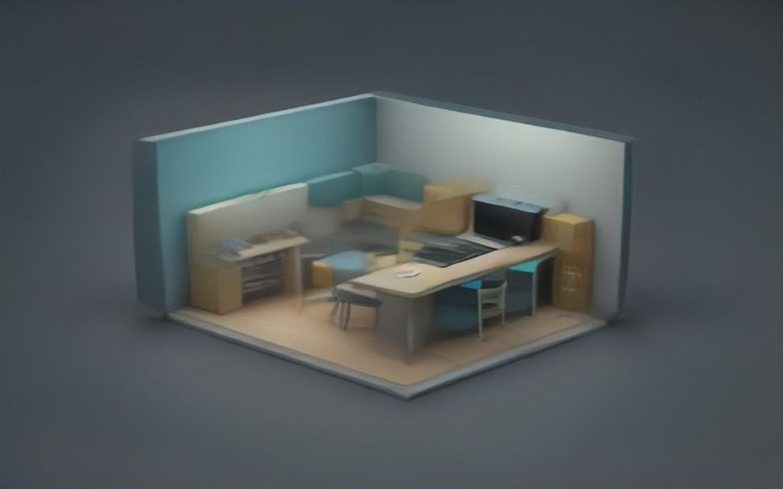

دیشب داشتم واسه کاور جدیدم با ویو ور میرفتم، کلافهی کلافه... هر چی میزدم یه چیز شلوغ و خستهکننده تحویلم میداد. تا اینکه این ترکیب ایزومتریک رو امتحان کردم و واقعاً ماتم برد!
ببین، **رازِ خفن شدن خروجی ویو اینه که بهش حسِ ابعاد و نور هدیه بدی، نه فقط یه مشت کلمهی خشک.**
پرامپتی که برام جادو کرد این بود:
Isometric 3D cutaway diorama of a cozy futuristic office powered by [Brand], soft pastel colors, octane render, clean studio lighting.
چرا انقدر تمیز درمیاد؟ چون کلماتی مثل diorama اون حالت سهبعدیِ مینیاتوری شیک رو میسازن و pastel هم رنگا رو ملایم میکنه... به همین سادگی! ☕️
برای شخصیسازی، فقط کافیه جای [Brand] اسم موضوعت رو بذاری؛ مثلاً Python یا Apple. خوراک کاورهای آموزشیه.
چند بار تا حالا سر ساختن یه کاور ساده، کلافه شدی و بیخیال شدی؟... اینو تست کن، کیفشو ببر. 🎨
🚀 عضویت در کانال 💎 پک پرامپتها